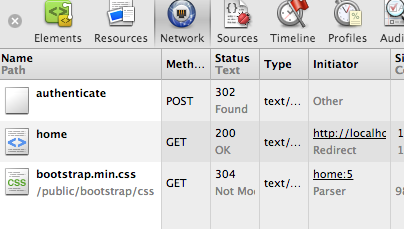
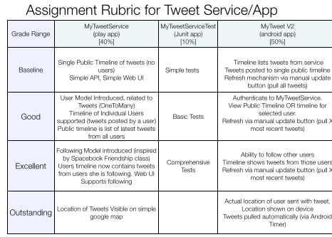
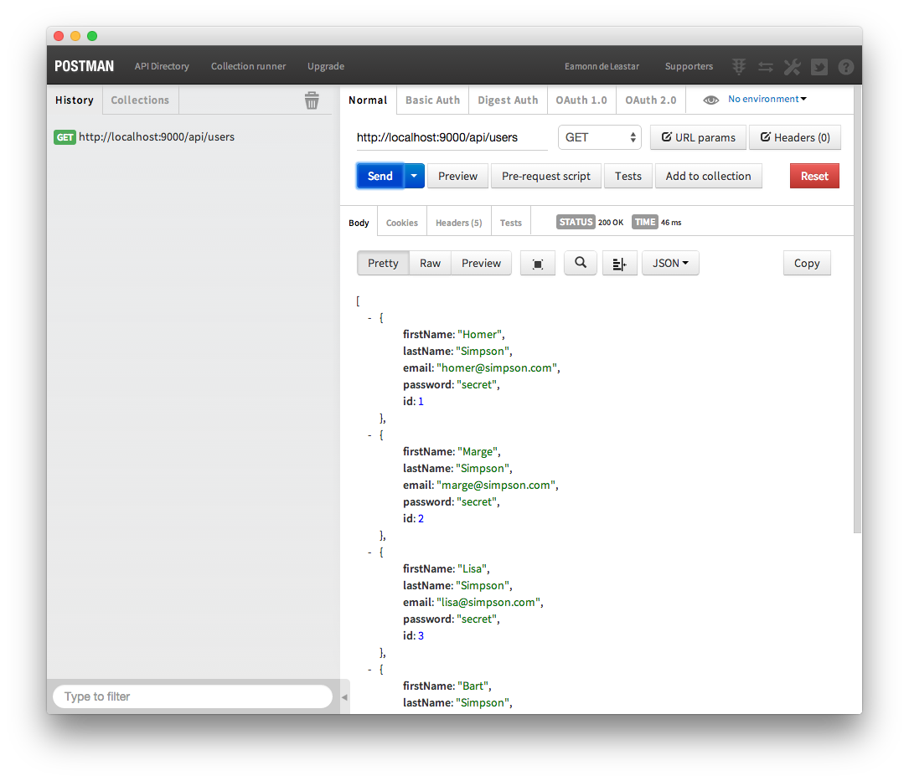

HTTP Protocol
9: APIs & Rest


HTTP is the heartbeat of the Web, and the key protocol through with both applications and services communicate. A general understanding of it is a key part of a developers knowledge base.
Tracing HTTP

Most browsers come with built in tools to let the developer explore the http interactions. As the it is text based, we can examine and interpret the requests and responses without too much difficulty.
APIs

An Application Programmer Interface is the published set of http endpoints and messages that a service can support. API design and implementation is a rich field of study - here we take a general overview.
donation-service-play

This is our first attempt at implementing an API. It comprises essentially of a set of routes (the end points), controllers for these routes + a mechanisms for translating Java objects to/from the Json format.
Donation Service Test

A standard Java project to implement a JUnit set of tests of the donation Service API. This is essential to ensure the stability and robustness of the REST interface.
Assignment 2

This the specification and grading guidelines for Assignment 2 - MyTweetService + Test + Android App.
Donation-04

Create a version of the the donation app as a play project. Expose an 'API' from this app to enable other programmes to use it. Try to access the API from a browser, and also from a special purpose browser extension.
Donation-05

Create a new standard java project specifically to test the API we have developed in donation-service-play project.
Donation-06

Deploy the donation-service app to Heroku. This will require a heroku account + a locally installed git tool set.